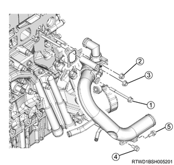
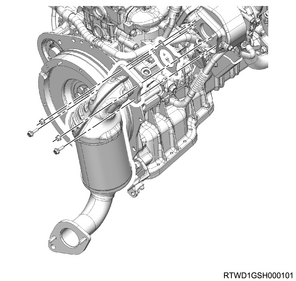
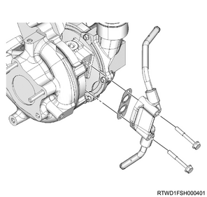
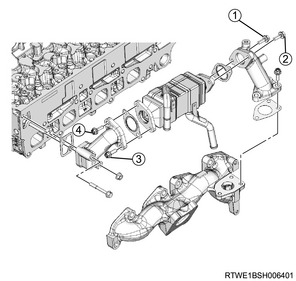
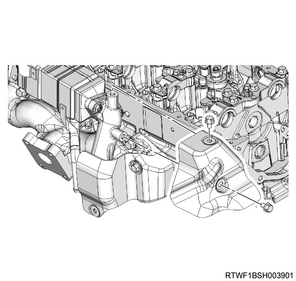
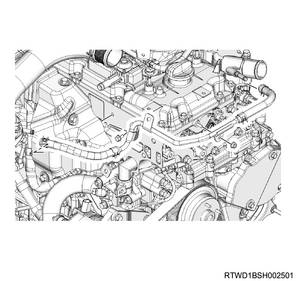

Oil cooler assembly installation (4JJ1)
1. Oil cooler assembly installation
1. Apply liquid gasket to the oil cooler assembly.
Note
- Align with the oil cooler grooves and apply ThreeBond 1207B.
- Application area
Caution
- Within 5 minutes after application, install the oil cooler assembly.
2. Install the O-ring to the oil cooler assembly.
Note
- Grease may be applied to the O-ring.
3. Install the oil cooler assembly to the cylinder block.
Note
- Tighten in the order in the diagram.
Tightening torque： 25 N・m { 2.5 kgf・m / 18 lb・ft }
4. Install the oil feed pipe to the cylinder block and the oil cooler.
Note
- Install the oil feed lower pipe.
Tightening torque： 54 N・m { 5.5 kgf・m / 40 lb・ft } Cylinder block side
Tightening torque： 14.7 N・m { 1.5 kgf・m / 11 lb・ft } Oil cooler side
Tightening torque： 25 N・m { 2.5 kgf・m / 18 lb・ft } Bracket
5. Install the oil feed pipe to the cylinder head and the oil cooler.
Note
- Remove the oil feed upper pipe.
Tightening torque： 14.7 N・m { 1.5 kgf・m / 11 lb・ft }
- Oil feed upper pipe
- Oil feed lower pipe
2. Oil filter installation
1. Install the gasket to the oil cooler.
Caution
- Do not reuse the gasket.
2. Install the oil filter to the oil cooler.
Note
- Tighten in the order shown in the diagram.
Caution
- Take sufficient care to prevent dust and foreign materials from getting inside.

Tightening torque： 25 N・m { 2.5 kgf・m / 18 lb・ft }
3. Oil filter element installation
Note
- Clean the oil filter installation surface.
1. Apply the engine oil to the oil filter element.
Note
- Apply grease or engine oil to the seal section.
2. Install the oil filter element to the oil filter bracket using special tool.

SST: 5-8840-0203-0 - oil filter wrench
Tightening torque： 19.6 N・m { 2.0 kgf・m / 14 lb・ft }
Note
- Or, after contacting the oil seal, further tighten it by rotating it 1 and a quarter round.

- Oil filter wrench
4. Water intake pipe installation
1. Temporarily tighten the water intake pipe to the cylinder block.
Note
- Temporarily tighten in the order shown in the diagram.
Caution
- Do not reuse the gasket.

2. Securely tighten the water intake pipe to the cylinder block.
Note
- Firmly tighten in the order shown in the diagram.
Tightening torque： 25 N・m { 2.5 kgf・m / 18 lb・ft }
5. EGR water pipe installation
1. Install the EGR water pipe to the oil cooler.
Tightening torque： 25 N・m { 2.5 kgf・m / 18 lb・ft }

2. Connect the EGR water pipe to the water intake pipe.
6. Generator installation
1. Install the generator to the lower bracket.

2. Install the upper bracket to the generator and the timing gear case.
Tightening torque： 25 N・m { 2.5 kgf・m / 18 lb・ft }

7. Cooling fan belt installation
1. Install the cooling fan belt to the pulley.
8. Cooling fan belt adjustment
1. Adjust tension to the specified value using a tension meter.
Note
- Turn the adjust bolt to adjust the tension.
2. Check tension of the cooling fan belt.
Note
- When adjusting the amount of flex to the original value
- Apply a load to measurement point 1 of the cooling fan belt and adjust the amount of flex.
Load： 98 N { 10 kg / 22 lb }
| Position of belt tension | |
| Amount of flex | |
| New product | ： 5.0 to 6.0 mm { 0.197 to 0.236 in } |
| Reuse | ： 7.0 to 7.8 mm { 0.276 to 0.307 in } |
Note
- When adjusting the tension by using a sonic tension meter
- Measure the frequency at measurement point 1 with a sonic tension meter.
| Position of the belt tension | |
| Frequency | |
| New | ： 207 to 231 Hz |
| Reuse | ： 176 to 190 Hz |

- Measurement point 1
- Measurement point 2
- Measurement point 3
- Measurement point 4
- Adjust bolt (A/C compressor drive belt)
Note
- After adjusting the tension, tighten the tensioner fixing nut.
Tightening torque： 41 N・m { 4.2 kgf・m / 30 lb・ft }
Note
- If the cooling fan belt is replaced with a new one, make the new cooling fan belt fit in to cope with initial elongation.
- After making the cooling fan belt fit in, adjust its tension once again.
9. A/C compressor drive belt installation
1. Install the A/C compressor drive belt to the pulley.

- A/C compressor drive belt
10. A/C compressor drive belt adjustment
1. Adjust tension to the specified value using a tension meter.
Note
- When adjusting the amount of flex to the original value
- Apply a load to measurement points 2, 3, and 4 of the A/C compressor drive belt and adjust the amount of flex.
Load： 98 N { 10 kg / 22 lb }
| Measurement point 2 | |
| Amount of flex | |
| For a new product | ： 12.4 to 16.4 mm { 0.488 to 0.646 in } |
| When reused | ： 16.5 to 19.1 mm { 0.650 to 0.752 in } |
| Measurement point 3 | |
| Amount of flex | |
| For a new product | ： 12.5 to 16.5 mm { 0.492 to 0.650 in } |
| When reused | ： 16.5 to 19.1 mm { 0.650 to 0.752 in } |
| Measurement point 4 | |
| Amount of flex | |
| For a new product | ： 15.9 to 20.7 mm { 0.626 to 0.815 in } |
| When reused | ： 20.7 to 23.7 mm { 0.815 to 0.933 in } |
Note
- When adjusting the tension by using a sonic tension meter
- Measure the frequency at measurement points 2, 3, and 4 with a sonic tension meter.
| Measurement point 2 | |
| Frequency | |
| For a new product | ： 92 to 112 Hz |
| When reused | ： 80 to 92 Hz |
| Measurement point 3 | |
| Frequency | |
| For a new product | ： 92 to 112 Hz |
| When reused | ： 79 to 91 Hz |
| Measurement point 4 | |
| Frequency | |
| For a new product | ： 70 to 86 Hz |
| When reused | ： 62 to 70 Hz |
- Measurement point 1
- Measurement point 2
- Measurement point 3
- Measurement point 4
- Adjust bolt (A/C compressor drive belt)
Note
- After adjusting the tension, tighten the tensioner fixing nut.
Tightening torque： 41 N・m { 4.2 kgf・m / 30 lb・ft }
11. Exhaust manifold installation
1. Install the gasket to the cylinder head.
Note
- Assemble the projection section to the rear side of the cylinder head.
Caution
- Do not reuse the gasket.

- Projection
2. Temporarily tighten the exhaust manifold to the cylinder head.
Note
- Install the washer and nut, and tighten them temporarily as shown in the diagram.

- Stud bolt
- Washer
- Nut
3. Securely tighten the exhaust manifold to the cylinder head.
Note
- Tighten in the order shown in the diagram.
Tightening torque： 52 N・m { 5.3 kgf・m / 38 lb・ft }
Caution
- Avoid tightening them too much because doing so may hamper expansion and contraction of the manifold due to heat.

12. Generator connect
1. Connect the harness to the generator.
Tightening torque： 12 N・m { 1.2 kgf・m / 106 lb・in } Terminal nut
13. Turbocharger assembly installation
1. Install the gasket to the turbocharger.
Caution
- Do not reuse the gasket.
2. Install the turbocharger to the exhaust manifold.
Tightening torque： 27 N・m { 2.8 kgf・m / 20 lb・ft }

Note
- Feed 0.5 cc engine oil from the oil filler.
14. Turbocharger bracket installation
1. Install the turbocharger bracket to the turbocharger and the cylinder block.
Tightening torque： 25 N・m { 2.5 kgf・m / 18 lb・ft }

15. Catalyst converter installation
1. Install the catalyst converter to the turbocharger assembly.
Tightening torque： 27 N・m { 2.8 kgf・m / 20 lb・ft }

Caution
- Do not reuse the gasket.
2. Temporarily tighten the catalyst converter to the crankcase.
Note
- Temporarily tighten in the order shown in the diagram.

3. Securely tighten the catalyst converter to the crankcase.
Note
- Firmly tighten in the order shown in the diagram.
Tightening torque： 94 N・m { 9.6 kgf・m / 69 lb・ft }
4. Connect the catalyst converter to the front exhaust pipe.
Tightening torque： 67 N・m { 6.8 kgf・m / 49 lb・ft }

Caution
- Do not reuse the gasket.
16. Water feed and return pipe installation
1. Install the water feed and return pipe to the turbocharger.
Tightening torque： 10 N・m { 1.0 kgf・m / 89 lb・in }
Caution
- Do not reuse the gasket.

17. Oil return pipe installation
1. Install the oil return pipe to the turbocharger and the crankcase.
Tightening torque： 10 N・m { 1.0 kgf・m / 89 lb・in } Turbocharger side
Tightening torque： 25 N・m { 2.5 kgf・m / 18 lb・ft } Crankcase side
Caution
- Do not reuse the gasket.

18. Turbocharger feed oil pipe installation
1. Install the turbocharger feed oil pipe to the turbocharger and the oil cooler.
Tightening torque： 23 N・m { 2.3 kgf・m / 17 lb・ft }
Caution
- Do not reuse the gasket.

- Turbocharger feed oil pipe
19. Turbocharger water return hose connect
1. Connect the turbocharger water return hose to the water feed and return pipe.

- Turbocharger water feed hose
- Turbocharger water return hose
20. Turbocharger control solenoid connect
1. Connect the vacuum hose to the turbocharger control solenoid.
21. EGR cooler installation
1. Temporarily tighten the EGR pipe adapter to the EGR cooler.
Note
- Temporarily tighten in the order shown in the diagram.
Caution
- Do not reuse the gasket.

2. Securely tighten the EGR pipe adapter to the EGR cooler.
Note
- Final tighten in the order shown in the diagram.
Tightening torque： 27 N・m { 2.8 kgf・m / 20 lb・ft }
3. Temporarily tighten the EGR cooler to the cylinder head and the exhaust manifold.
Note
- Temporarily tighten in the order shown in the diagram.
Caution
- Do not reuse the gasket.

4. Securely tighten the EGR cooler to the cylinder head and the exhaust manifold.
Note
- Final tighten in the order shown in the diagram.
Tightening torque： 27 N・m { 2.8 kgf・m / 20 lb・ft }
22. Exhaust manifold heat protector installation
1. Install the exhaust manifold heat protector to the exhaust manifold.
Tightening torque： 25 N・m { 2.5 kgf・m / 18 lb・ft }


23. Water hose connect
1. Connect the water hose to the EGR cooler.
Note
- Connect both the feed hose and the return hose to the EGR cooler.

- Return hose
- Feed hose
24. Water pipe installation
1. Install the water pipe to the cylinder head assembly.
Tightening torque： 10 N・m { 1.0 kgf・m / 89 lb・in } Bolt, nut

2. Connect the turbocharger water feed hose to the outlet pipe.
25. Turbocharger water feed pipe connect
1. Connect the turbocharger water feed hose to the water feed and return pipe.
- Turbocharger water feed hose
- Turbocharger water return hose
26. Vacuum hose installation
1. Install the vacuum hose to the turbocharger and the vacuum pipe.

27. Air cleaner assembly installation
1. Install the air cleaner assembly to vehicle.
Tightening torque： 20 N・m { 2.0 kgf・m / 15 lb・ft }

- Air cleaner assembly
- MAF sensor
- Vacuum hose
- Blow-by hose
- Intake pipe
- Barometric pressure sensor
2. Connect the intake pipe to the turbocharger assembly.
Tightening torque： 4 N・m { 0.4 kgf・m / 35 lb・in }
Note
- Install by aligning the alignment mark position as shown in the diagram.

- Alignment mark
3. Connect the vacuum hose to the air cleaner assembly.
4. Connect the harness connector to the barometric pressure sensor.
5. Connect the harness connector to the MAF sensor.
28. Blow-by hose connect
1. Connect the blow-by hose to the cylinder head cover.
29. Intake air duct installation
1. Install the intake air duct to the turbocharger and the intercooler.
Caution
- Referring to the diagram, face the threaded portion of the clamp toward the engine front.
Tightening torque： 25 N・m { 2.5 kgf・m / 18 lb・ft } Nut, bolt
Tightening torque： 4 N・m { 0.4 kgf・m / 35 lb・in } Clamp (Turbocharger side)
Tightening torque： 5 N・m { 0.5 kgf・m / 44 lb・in } Clamp (Intercooler side)

30. Engine cover installation
1. Install the engine cover to the engine.

- Engine cover
31. Underguard installation
Note
- The following applies to models with an under air deflector.
1. Install the under air deflector to the frame.
Note
- Tighten the clip and the 5 bolts.
Tightening torque： 42 N・m { 4.3 kgf・m / 31 lb・ft }

- Bolt
- Clip
Note
- The following applies to models with front and rear underguard.
2. Install the rear underguard to the frame.
Note
- Tighten the 4 bolts.
Tightening torque： 42 N・m { 4.3 kgf・m / 31 lb・ft }
3. Install the front underguard to the frame.
Note
- Tighten the 5 bolts.
Tightening torque： 42 N・m { 4.3 kgf・m / 31 lb・ft }

- Front underguard
- Rear underguard
- Bolt
Note
- The following applies to models with front and rear underguard and an oil pan guard.
4. Install the rear underguard to the frame.
Note
- Tighten the 4 bolts.
Tightening torque： 42 N・m { 4.3 kgf・m / 31 lb・ft }
5. Install the oil pan guard to the frame.
Note
- Tighten the 4 bolts.
Tightening torque： 90 N・m { 9.2 kgf・m / 66.4 lb・ft }
6. Install the front underguard to the frame.
Note
- Tighten the 5 bolts.
Tightening torque： 42 N・m { 4.3 kgf・m / 31 lb・ft }

- Front underguard
- Oil pan guard
- Bolt oil pan guard
- Bolt
- Rear underguard
32. Engine oil filling
1. Replenish the engine with the engine oil.
Note
- Check the tightening of the oil pan drain plug.
Tightening torque： 44 N・m { 4.5 kgf・m / 32 lb・ft }
33. Coolant filling
1. Replenish the radiator with coolant.
Note
- Use the coolant contains 50 % anti-freeze solution.
- Pour coolant up to the filler neck.
2. Replenish the radiator reserve tank with coolant.
Note
- Pour coolant up to the MAX line.
3. Install the radiator cap to the radiator.
34. Battery ground cable connect
1. Connect the battery ground cable to the battery.
2. Close the engine hood assembly.
3. Lower vehicle.